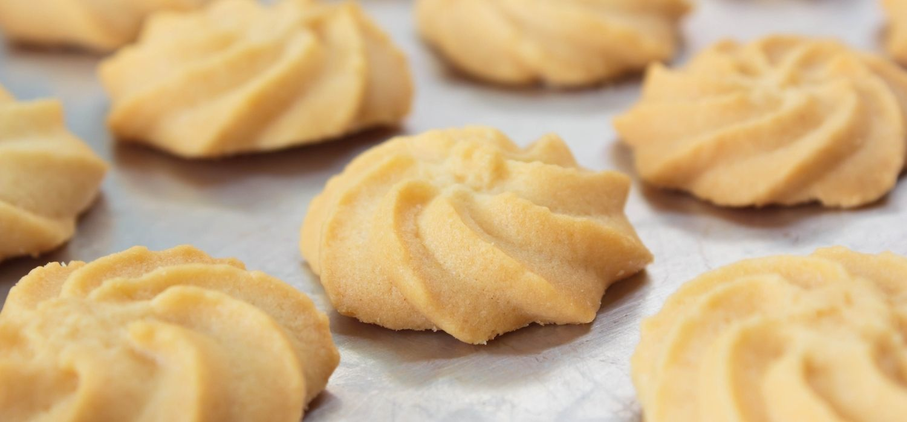

Masas sin gluten
Medialunas
Aprende como hacer medialunas para celiacos con una miga super esponjosa y tierna.
Ver receta

Galletitas de Manteca
Toma nota y vete directo a la cocina, porque estás apunto de saborear unas galletitas de manteca deliciosas.
Ver receta
Rogelitos
Rogelitos o Rogel pequeño son alfajores bien típicos Argentinos de cuatro capas con dulce de leche y baño de merengue.
Ver recetaProfiteroles
Receta de Profiteroles, una masa bomba bien aireada e ideal para rellenar con lo que mas te guste.
Ver receta
Vainillas
Por qué no hacer las clásicas vainillas en casa? Animate a esta receta súper fácil ideal para acompañar con una rica chocolatada.
Ver receta
Coquitos
Los coquitos, cocadas o besitos de coco son unos dulces de lo más fáciles de hacer y ricos. Con solo tres sencillos ingredientes.
Ver receta